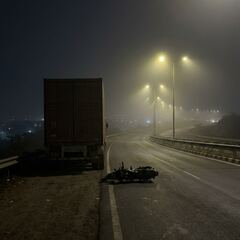

Chandni Chowk · Accidents and fires
Two daily wage workers killed as motorcycle hits parked truck near Chandni Chowk, Pune
Two daily wage workers, aged 26 and 20, were killed in the early hours of Monday when their motorcycle hit a parked container truck on the Katraj-Dehu Road bypass near Chandni Chowk in Pune. Police sub-inspector Sarang Thakare of Bavdhan police gave the details.
